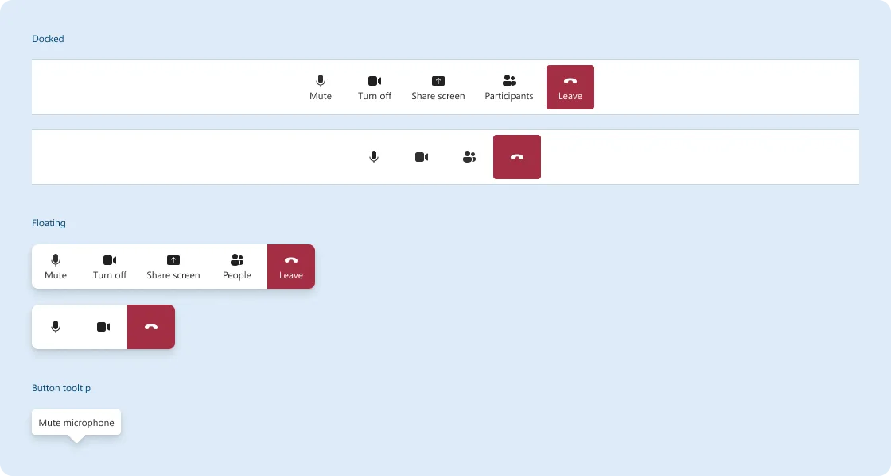
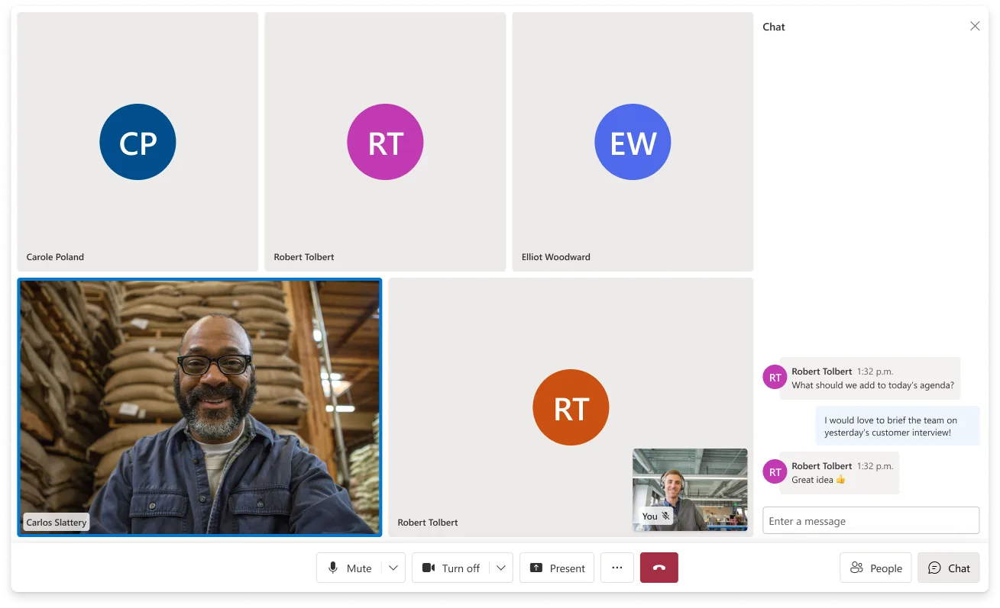
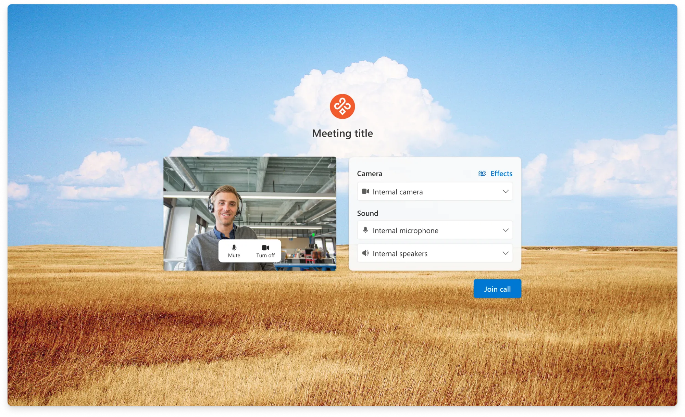
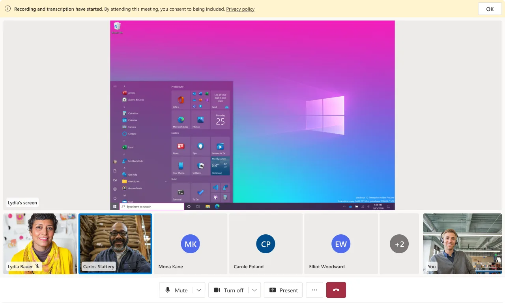
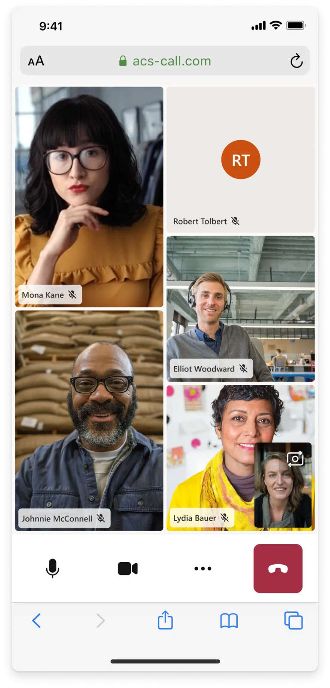
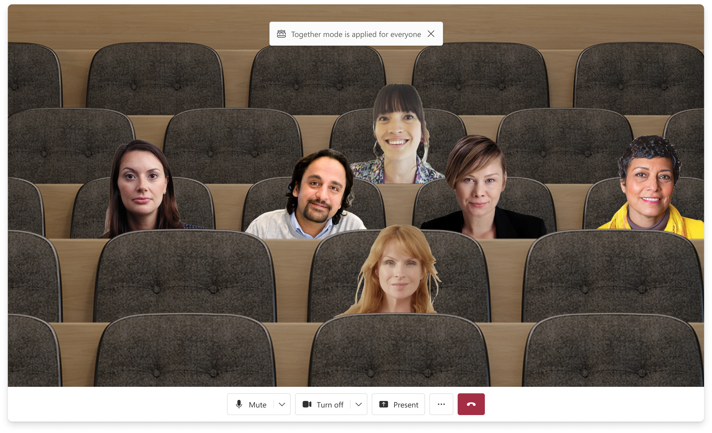
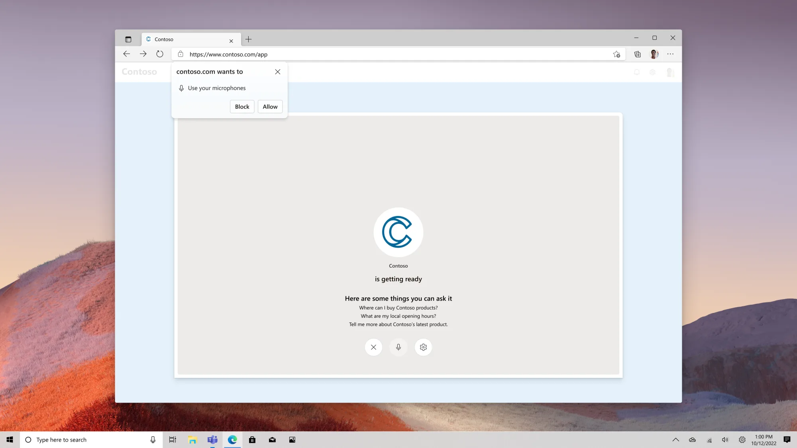

ACS UI Library
- Organization
- Microsoft
Azure Communication Services - Role
- Product lead and designer
Web, iOS, Android - Collaborators
- Alex Pereira
Jessica Downey
Danielle Hibbs
20+ engineers - Duration
- 2022 – Present
Product Site Product Storybook
The ACS UI Library is the interface layer for Azure Communication Services. It ships in two tiers: composites that drop a whole calling or chat experience into a product in a few lines, and components a developer assembles into their own. Both run on web, iOS, and Android. It carries 11.1M+ monthly minutes and ships inside 200+ businesses.
I'm the product lead and the designer. I set the interaction model, made the visual calls, and wrote the specs. I also own the roadmap and the customer conversations for those same features. 40+ have shipped with a team of 20+ engineers.
Everything here is designed through defaults. Developers adopt the library; their patients, customers, and agents just get whatever we shipped, without ever choosing it. So one control bar has to hold up in a telehealth appointment and in a contact center, and still bend far enough that a team can make it theirs.
What I did
- Interaction design
- Set the models end to end: RTT panel behavior, call summary hierarchy, control bar overflow, pre-call device setup.
- Visual design direction
- Set the visual direction on every feature, down to the opacity model for RTT text states and component density on each platform.
- Design strategy and roadmap
- Decided what got designed and when, against accessibility deadlines, adoption gaps, and the platform's move toward AI.
- Customer research
- Interviewed Teladoc, CVS, OP Bank and others to find what was blocking adoption, then turned that into design priorities.
- Cross-platform leadership
- Led design across web, iOS, and Android at once, so one interaction model held steady across three engineering teams.
- Accessibility
- Drove the first Real-Time Text implementation at Microsoft, scoped for the European Accessibility Act deadline.
Selected images








Outcome
One of ACS's most-used surfaces, shipping in healthcare, finance, automotive, retail, and enterprise products. Every composite meets WCAG 2.1 AA before a developer touches it.
The full case study covers the decisions behind it: why in-progress text is dimmed instead of colored, and why enabling RTT asks for consent.
11.1M+
Monthly minutes by the end of 2025, up from roughly 2M at the start of the year
200+
Businesses onboarded across healthcare, finance, automotive, and retail
40+
Features owned end to end, from first Figma frame to public release